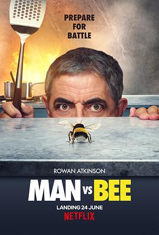

人来蜂 / Man Vs Bee
又名：人蜂大战 / 人蜂不两立(港) / 抽蜂男(豆友译名)
离谱，从电影分集开始就很离谱，剧情也是很离谱 =，= 为啥和蜜蜂较劲，明明蜜蜂蜇人自己也会p掉，所以丝毫不用担心
作品信息
| 导演 | 大卫·科尔 |
| 编剧 | 罗温·艾金森 / 威廉姆·戴维斯 |
| 主演 | 罗温·艾金森 / 克劳迪·布莱克利 / 陆思敬 / 朱利安·林希德-图特 / 汤姆·巴斯登 / 英迪娅·福勒 / 丹尼尔·弗恩 / 格季米纳斯·阿多迈蒂斯 / 克里斯蒂安·阿利福 / 格雷格·麦克休 / 艾莎·卡拉 / 齐季·阿库多卢 / 菲尔·康韦尔 / 丹尼尔·库克 / 汉娜·伯恩 / 雅斯敏·霍尔尼斯-德芙 / 布兰登·墨菲 / 露丝·霍洛克斯 |
| 类型 | 喜剧 / 短片 |
| 制片国家/地区 | 英国 |
| 语言 | 英语 |
| 首播 | 2022-06-24(美国) |
| 集数 | 9 |
| 单集片长 | 10分钟 |
| IMDb | tt13640670 |
说过什么
2022-07-03 14:16:59
看过 · 时间来自广播，短评来自标记页
离谱，从电影分集开始就很离谱，剧情也是很离谱 =，= 为啥和蜜蜂较劲，明明蜜蜂蜇人自己也会p掉，所以丝毫不用担心
最后一次看到是 2026-08-01T11:05:04+10:00 · 豆瓣原页